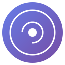

Supported
Works where you chat
Consistent capture flow across all four platforms, with Claude-specific detection under the hood.

Capture conversations from ChatGPT, Claude, Gemini, and Grok. Save them to Obsidian with graph links and a manual fallback that is always there.
No accounts. No cloud. Just your chats, saved locally.
Detects when the AI reply appears and saves automatically after your delay. The manual button stays ready too.
One-click fallback. The button is always there when you want it.
Generates connected notes so conversations appear in Obsidian's graph view.
No servers, no analytics, no accounts. Your data never leaves your machine.
ChatGPT, Claude, Gemini, Grok. Same button everywhere, with adaptive detection for Claude.
Clean notes with YAML frontmatter, timestamps, and proper formatting.
One plugin for Obsidian. One extension for Chrome. That's it.
In Obsidian, go to Settings → Community plugins → Browse
Search for "Local REST API with MCP" by Adam Coddington. Install it, then enable it.
Click the gear icon next to the plugin. Copy the API key from the top. dont copy the word Bearer , copy the key.
Scroll down, enable "Non-encrypted (HTTP) server". Port should be 27123.
Go to chrome://extensions/, enable Developer mode, click Load unpacked, select the Brain folder.and also pin this extension better access.
Click the Brain icon, paste the key you copied from Obsidian.
Port: 27123. Click Connect, then Test. You should see "Connected!".
Open any supported AI chat. Click "Capture to Brain" or let auto-capture do its thing.
Consistent capture flow across all four platforms, with Claude-specific detection under the hood.
Common issues and how to fix them.